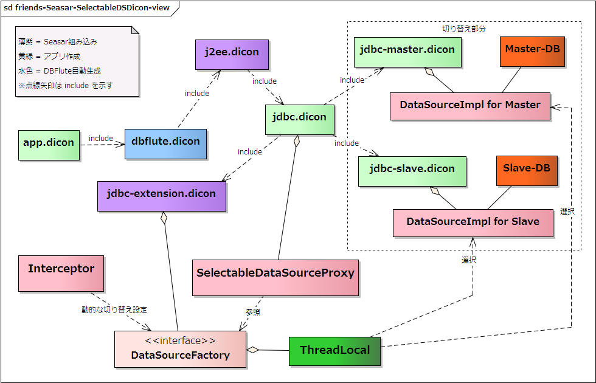

SelectableDataSource
${indexlist}冗長化複数DB
冗長化複数DBの構成の際に利用する機能です。DBアクセスの処理の際に、接続する DataSource を動的に切り替えて負荷分散などを実現する仕組みが Seasar(S2Container) には備わっています。DBFluteで冗長化複数DBを実現する場合も、その機能を活用すると良いでしょう。
典型的な例として、MasterDB と SlaveDB と二つ以上のDBを用意し、更新処理は全て MasterDB で行い、検索処理の一部を(更新内容が同期された) SlaveDB で行うというパターンがあります。 MasterDB に障害が発生した場合は SlaveDB が MasterDB となってサービスが継続できます。
ここでは、Master, Slave を想定した構成を前提に説明を行いますが、他のパターンでも応用できます。
SelectableDataSourceの使い方
MasterDB を masterDataSource、SlaveDB を slaveDataSource という名前で定義すると仮定します(以降、全ての例において同様)。
Dicon構造
jdbc.dicon で定義している dataSource コンポーネントの実体を、SelectableDataSourceProxy クラスに変更し、二つ(もしくは三つ以上)の DB に対する jdbc-xxx.dicon を作成して include します。
jdbc.dicon には、SelectableDataSourceProxy の dataSource コンポーネントだけを定義し、それぞれの jdbc-xxx.dicon では、それぞれの DB に対応した "もともとの jdbc.dicon の構成" を定義します。
- jdbc.dicon
- SelectableDataSourceProxy の dataSource コンポーネント
- jdbc-master.dicon, jdbc-slave.dicon への include
- jta.dicon, jdbc-extension.dicon への include
- jdbc-master.dicon
- MasterDB のための xaDataSource, connectionPool
- DataSourceImpl の masterDataSource コンポーネント
- jta.dicon, jdbc-extension.dicon への include
- jdbc-slave.dicon
- SlaveDB のための xaDataSource, connectionPool
- DataSourceImpl の slaveDataSource コンポーネント
- jta.dicon, jdbc-extension.dicon への include
xxxDataSource の xxx 部分が切り替え先DBを識別する DataSourceName となります。
図 : SelectableDataSourceのDicon構造 
{kind=link}
ベタな実装方法
非常に単純でベタな実装方法は以下のようになります。
e.g. SelectableDataSource のベタな実装方法 @Java
protected MemberBhv memberBhv;
protected DataSourceFactory dataSourceFactory; // injected
public void fooAndBar() {
dataSourceFactory.setSelectableDataSourceName("master");
Member member = ...
...
memberBhv.update(member); // master の会員を更新
dataSourceFactory.setSelectableDataSourceName("slave");
MemberCB cb = ...
...
... = memberBhv.select(cb); // slave の会員を検索
}
DataSourceFactory は、Seasar に組み込まれている jdbc-extension.dicon にて定義されています。 デフォルトでは何の DataSource とも関連付いていないため、DBアクセスする前は必ず何かしらの DB を指定する必要があります。
通常、このように利用することはあり得ません。 仕組みをわかりやすく理解するための Example です。
現実的な実装方法
現実的には、DBアクセスのたびに指定するのはあり得ない感じなので、Interceptor などの共通処理で切り替えます。デフォルトのDBの設定と切り替えのロジックを実装します。
例えば、通常は MasterDB の方にDBアクセスし、SlaveDB を示すアノテーションがメソッドに定義されていたら、そのメソッド内だけ SlaveDB にDBアクセスするというやり方が考えられます。
e.g. SelectableDataSource の現実的な実装方法 (Interceptor) @Java
protected DataSourceFactory dataSourceFactory; // injected
public Object invoke(MethodInvocation invocation) throws Throwable {
String current = dataSourceFactory.getSelectableDataSourceName();
try {
String selectableName = getSelectableDataSourceName();
dataSourceFactory.setSelectableDataSourceName(selectableName);
return invocation.proceed();
} finally {
dataSourceFactory.setSelectableDataSourceName(current);
}
}
protected String getSelectableDataSourceName(MethodInvocation invocation) {
if (hasSlaveAnnotation(invocation)) {
return "slave";
} else {
return "master"; // MasterDB as default
}
}
protected boolean hasSlaveAnnotation(MethodInvocation invocation) {
// メソッドに SlaveDB を示すアノテーションが付いていたら true
// (そのアノテーションは自作)
return ...
}
e.g. SelectableDataSource の現実的な実装方法 (Logic) @Java
protected MemberBhv memberBhv;
protected PurchaseBhv purchaseBhv;
@SlaveDB
public void selectHeavy() { // このメソッド内のDBアクセスは全て SlaveDB へ
MemberCB cb = ...
... = memberBhv.selectList(cb);
PurchaseCB cb = ...
... = purchaseBhv.selectList(cb);
}
この Interceptor は、DBアクセスをする可能性のあるプロセスの入り口となるコンポーネント、 および、DBアクセス先を切り替える可能性のあるコンポーネントに関連付けます。例えば、Page, Action, Service, Logicクラスなどです。 バリデーションやバリデーションエラーなどの処理の中でDBアクセスをする場合は、それらメソッドにも関連付ける必要があります。
この(独自の) Interceptor は、例えば S2ClassBuilder で aop.dicon にコンポーネントを追加できる aop++.dicon に定義し、customizer.dicon にてどのコンポーネントに定義するか関連付けます。
また、Interceptor は通常 public メソッドにのみ動作しますので、間違えて protected メソッドに付けないようにディベロッパーに通知しておく必要があります。
トランザクションは独立
Master と Slave のようなレプリケーション構成の場合は、そもそも更新処理を Master に集中させないといけないためあまり気にする必要はありませんが、トランザクションはそれぞれのDBごとに独立したものになります。 そのことだけはしっかり理解しておいた方が良いでしょう。
更新処理の混在に注意
Master と Slave のようなレプリケーション構成の場合は、Slave の方で更新処理が走らないように注意する必要があります。ここでの例で言えば、SlaveDB アノテーションが付与されているメソッド内で insert() や upadte() を呼び出してはいけません。
Slave への接続を ReadOnly にしておけばエラーで検知することができますが、 できるだけ更新処理の混在が発生しないようにしたい場合は、シンプルなコールバック方式や更新処理フックなどを利用すると良いでしょう。
よりシンプルにコールバックで
Master と Slave のようなレプリケーション構成の場合は、Slave の方で更新処理が走らないように注意する必要があります。ここでの例で言えば、SlaveDB アノテーションが付与されているメソッド内で insert() や upadte() を呼び出してはいけません。 また、トランザクションはそれぞれ独立したものになります。
もし、アノテーション方式だとちょっと更新処理の紛れが怖いというのであれば、先ほどの Interceptor に加えて、コールバック処理でピンポイントで指定できるようにするのも一つの選択肢です。 このとき、Interceptor でアノテーション方式を有効にするか否かは実際に利用するかどうかと相談ですが、 やり方が何通りもあると混乱しがちなので、この場合はアノテーション方式は適用しない方が良いでしょう。 (ちなみに、その場合でもデフォルトのDBを設定するために Interceptor 自体は必要です)
e.g. SlaveDBへアクセスするユーテリィティの導入 @Java
@Resource
protected SlaveDBAccessor slaveDBAccessor;
public void foo() {
final MemberCB cb = new MemberCB();
cb.setupSelect...
cb.query().set...
List<Member> memberList = slaveDBAccessor.accessFixedly(new SlaveDBCallback() {
public List<Member> callback() {
return memberBhv.selectList(cb);
}
});
}
この例では、SlaveDBAccessor を jdbc.dicon で slaveDBAccessor という名前でコンポーネントとして登録し、access() メソッドの中で dataSourceFactory に対して SlaveDB に設定をする実装を想定しています。(コールバックが終わったら元のDBへ戻します)
デフォルトのDBの設定
先ほどの SlaveDBAccessor を利用してアノテーション方式を適用しない場合でも、デフォルトのDBを指定するために Interceptor は必要です。ただそれだけのための Interceptor を作成して定義するのに少々ためらうのであれば、SelectableDataSourceProxy を継承してデフォルトのDB(通常は MasterDB)を指定すれば、その Interceptor なしで実現できます。
SelectableDataSourceProxy の getDataSource() をオーバーライドし、dataSourceFactory から DataSourceName が取得できなかったときに、デフォルトの DataSourceName を利用して DataSource を戻すように修正します。このクラスを jdbc.dicon に代わりに定義します。
e.g. SelectableDataSourceProxy を継承してデフォルトのDBを設定 @Java
public class AppSelectableDataSourceProxy extends SelectableDataSourceProxy {
@Override
public DataSource getDataSource() {
String dataSourceName = dataSourceFactory.getSelectableDataSourceName();
if (dataSourceName == null) {
dataSourceName = "masterDataSource"; // as default
}
return dataSourceFactory.getDataSource(dataSourceName);
}
}
更新処理フックでMasterDBに
アノテーション方式、コールバック方式に限らず、とにかく紛れた更新処理が万が一でも SlaveDB に向かないような "すべり止め" 的な仕組みを施すと良いでしょう。
CallbackContext の BehaviorCommandHook を利用することで、DBFluteの更新処理に対して強制的に MasterDB に変更する処理をフックさせることができます。
e.g. BehaviorCommandHook を使って更新処理を強制的に MasterDB に @Java
...
// BehaviorCommandHook を設定
CallbackContext.setBehaviorCommandHookOnThread(new BehaviorCommandHook() {
protected String currentName;
protected boolean forcedSet;
public void hookBefore(BehaviorCommandMeta meta) {
if (needsForcedMasterCommand(meta)) {
final String masterDB = "master";
currentName = dataSourceFactory.getSelectableDataSourceName();
if (!masterDB.equals(currentName)) {
if (_log.isDebugEnabled()) {
_log.debug("...Accessing to MasterDB forcedly: " + masterDB);
}
dataSourceFactory.setSelectableDataSourceName(masterDB);
forcedSet = true;
}
}
}
protected boolean needsForcedMasterCommand(BehaviorCommandMeta meta) {
return !meta.isSelect();
}
public void hookFinally(BehaviorCommandMeta meta, RuntimeException cause) {
if (forcedSet) {
dataSourceFactory.setSelectableDataSourceName(currentName);
}
}
});
...
// 最後は必ずどこかでクリアすること
CallbackContext.clearBehaviorCommandHookOnThread
BehaviorCommandMeta の meta.isSelect() は、全てのプロシージャコールにおいて false と判定されます。つまり、検索だけで別に SlaveDB に実行してもよいプロシージャも MasterDB に向いてしまいます。あくまで更新処理が SlaveDB に向かないようにするための "すべり止め" であることが前提です。その辺、どこまで厳密に判定するかはプロジェクトの要件と BehaviorCommandMeta の仕様(JavaDocコメント)と相談して実装すると良いでしょう。
Exampleのススメ
dbflute-flexserver-example にて、SelectableDataSource を利用しています。Example のための無理矢理なレリプケーションですが、実装は参考にできるでしょう。